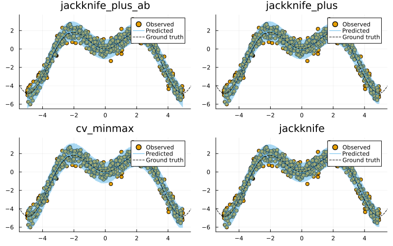

Regression
This tutorial presents and compares different approaches to Conformal Regression using a simple synthetic dataset. It is inspired by this MAPIE tutorial.
Data
We begin by generating some synthetic regression data below:
# Regression data:
# Inputs:
N = 600
xmax = 5.0
using Distributions
d = Uniform(-xmax, xmax)
X = rand(d, N)
X = reshape(X, :, 1)
# Outputs:
noise = 0.5
fun(X) = X * sin(X)
ε = randn(N) .* noise
y = @.(fun(X)) + ε
y = vec(y)
# Partition:
using MLJ
train, test = partition(eachindex(y), 0.4, 0.4, shuffle=true)
using Plots
scatter(X, y, label="Observed")
xrange = range(-xmax,xmax,length=N)
plot!(xrange, @.(fun(xrange)), lw=4, label="Ground truth", ls=:dash, colour=:black)Model
To model this data we will use polynomial regression. There is currently no out-of-the-box support for polynomial feature transformations in MLJ, but it is easy enough to add a little helper function for this. Note how we define a linear pipeline pipe here. Since pipelines in MLJ are just models, we can use the generated object as an input to conformal_model below.
LinearRegressor = @load LinearRegressor pkg=MLJLinearModels
degree_polynomial = 10
polynomial_features(X, degree::Int) = reduce(hcat, map(i -> X.^i, 1:degree))
pipe = (X -> MLJ.table(polynomial_features(MLJ.matrix(X), degree_polynomial))) |> LinearRegressor()Conformal Prediction
Next, we conformalize our polynomial regressor using every available approach (except the Naive approach):
using ConformalPrediction
conformal_models = merge(values(available_models[:regression])...)
results = Dict()
for _mod in keys(conformal_models)
conf_model = conformal_model(pipe; method=_mod, coverage=0.95)
global mach = machine(conf_model, X, y)
MLJ.fit!(mach, rows=train)
results[_mod] = mach
endFinally, let us look at the resulting conformal predictions in each case. The chart below shows the results: for the first 4 methods it displays the training data (dots) overlaid with the conformal prediction interval (shaded area). At first glance it is hard to spot any major differences between the different approaches. Next, we will look at how we can evaluate and benchmark these predictions.
using Plots
zoom = -0.5
xrange = range(-xmax+zoom,xmax-zoom,length=N)
plt_list = []
for (_mod, mach) in first(results, n_charts)
plt = plot(mach.model, mach.fitresult, X, y, zoom=zoom, title=_mod)
plot!(plt, xrange, @.(fun(xrange)), lw=1, ls=:dash, colour=:black, label="Ground truth")
push!(plt_list, plt)
end
plot(plt_list..., size=(800,500))
Evaluation
For evaluation of conformal predictors we follow Angelopoulos and Bates (2021) (Section 3). As a first step towards adaptiveness (adaptivity), the authors recommend to inspect the set size of conformal predictions. The chart below shows the interval width for the different methods along with the ground truth interval width:
xrange = range(-xmax,xmax,length=N)
plt = plot(xrange, ones(N) .* (1.96*2*noise), ls=:dash, colour=:black, label="Ground truth", lw=2)
for (_mod, mach) in results
ŷ = predict(mach, reshape([x for x in xrange], :, 1))
y_size = set_size.(ŷ)
plot!(xrange, y_size, label=String(_mod))
end
plt
We can also use specific metrics like empirical coverage and size-stratified coverage to check for correctness and adaptiveness, respectively (angelopoulus2021gentle?). To this end, the package provides custom measures that are compatible with MLJ.jl. In other words, we can evaluate model performance in true MLJ.jl fashion (see here).
The code below runs the evaluation with respect to both metrics, emp_coverage and ssc for a single conformal machine:
_mod, mach = first(results)
_eval = evaluate!(
mach,
operation=predict,
measure=[emp_coverage, ssc]
)
display(_eval)
println("Empirical coverage for $(_mod): $(round(_eval.measurement[1], digits=3))")
println("SSC for $(_mod): $(round(_eval.measurement[2], digits=3))")PerformanceEvaluation object with these fields:
measure, operation, measurement, per_fold,
per_observation, fitted_params_per_fold,
report_per_fold, train_test_rows
Extract:
┌──────────────────────────────────────────────┬───────────┬─────────────┬──────
│ measure │ operation │ measurement │ 1.9 ⋯
├──────────────────────────────────────────────┼───────────┼─────────────┼──────
│ ConformalPrediction.emp_coverage │ predict │ 0.94 │ 0.0 ⋯
│ ConformalPrediction.size_stratified_coverage │ predict │ 0.94 │ 0.0 ⋯
└──────────────────────────────────────────────┴───────────┴─────────────┴──────
2 columns omitted
Empirical coverage for jackknife_plus_ab: 0.94
SSC for jackknife_plus_ab: 0.94Note that, in the regression case, stratified set sizes correspond to discretized interval widths.
To benchmark the different approaches, we evaluate them iteratively below. As expected, more conservative approaches like Jackknife-min max and CV-min max attain higher aggregate and conditional coverage. Note that size-stratified is not available for methods that produce constant intervals, like standard Jackknife.
using DataFrames
bmk = DataFrame()
for (_mod, mach) in results
_eval = evaluate!(
mach,
resampling=CV(;nfolds=5),
operation=predict,
measure=[emp_coverage, ssc]
)
_bmk = DataFrame(
Dict(
:model => _mod,
:emp_coverage => _eval.measurement[1],
:ssc => _eval.measurement[2]
)
)
bmk = vcat(bmk, _bmk)
end
show(sort(select!(bmk, [2,1,3]), 2, rev=true))9×3 DataFrame
Row │ model emp_coverage ssc
│ Symbol Float64 Float64
─────┼──────────────────────────────────────────────────
1 │ jackknife_plus_ab_minmax 0.988333 0.980547
2 │ cv_minmax 0.96 0.910873
3 │ simple_inductive 0.953333 0.953333
4 │ jackknife_minmax 0.946667 0.869103
5 │ cv_plus 0.945 0.866549
6 │ jackknife_plus_ab 0.941667 0.941667
7 │ jackknife_plus 0.941667 0.871606
8 │ jackknife 0.941667 0.941667
9 │ naive 0.938333 0.938333References
Angelopoulos, Anastasios N., and Stephen Bates. 2021. “A Gentle Introduction to Conformal Prediction and Distribution-Free Uncertainty Quantification.” https://arxiv.org/abs/2107.07511.